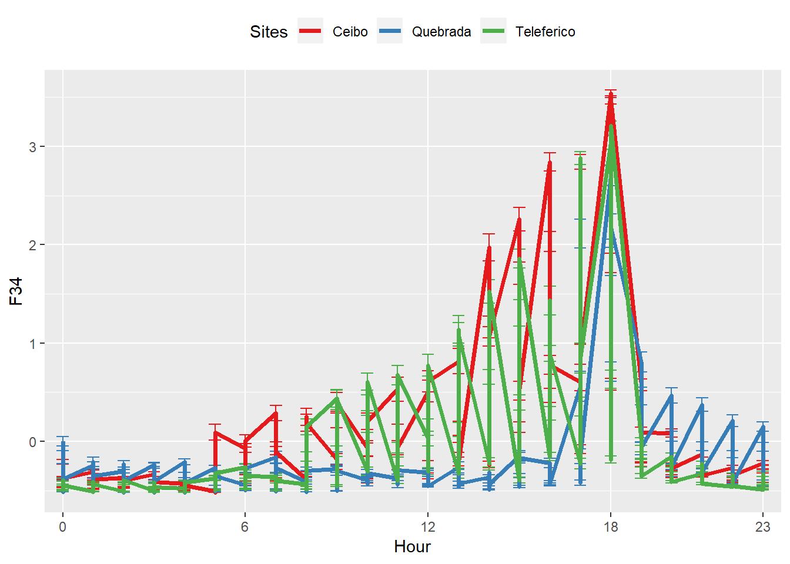
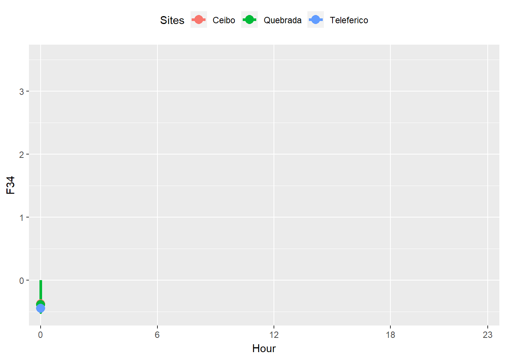

# Bases de datos
Una vez colectada su base de datos, usted puede respaldar en su cuenta de Github.
**Guarde siempre sus archivos desde el Excel en extensión .csv.
Para ello cree un repositorio que se llame bases de datos. Arrastre ahí las bases de datos que quiere respaldar.
\[ \]
datos <- read.table("https://raw.githubusercontent.com/osoramirez/bases_datos/master/G_Time_lmeT2.csv", sep=",", header=TRUE)
head(datos,4)## X F01 F12 F23 F34 F45 F56
## 1 1 0.47235100 0.16683450 -0.3298986 -0.47906147 0.14217124 0.08866986
## 2 2 0.04242657 0.23801929 0.2066249 -0.51284845 -0.19276298 -0.06842346
## 3 3 0.09568172 -0.01386534 0.2457169 -0.50609105 -0.06067624 -0.08540652
## 4 4 0.02412011 -0.36157564 0.1465706 0.03872392 -0.20219774 -0.08965229
## F67 F78 F89 F910 F1011 SPLmean
## 1 0.71305442 0.26764177 -0.185466 -0.06167013 -0.06572319 -0.2318916
## 2 0.29822893 0.06609852 -0.185466 -0.06167013 -0.06572319 -0.3829368
## 3 0.20341168 0.16687015 -0.185466 -0.06167013 -0.06572319 -0.3641227
## 4 -0.08104009 -0.10185419 -0.185466 -0.06167013 -0.06572319 -0.3912183
## dB GAP_v GAP_h MIG_v MIG_h Aniso_v Aniso_h
## 1 -1.050656 0.8699002 -0.348552 0.8049763 -0.3609011 0.2548336 0.01436384
## 2 -1.050656 0.8699002 -0.348552 0.8049763 -0.3609011 0.2548336 0.01436384
## 3 -1.050656 0.8699002 -0.348552 0.8049763 -0.3609011 0.2548336 0.01436384
## 4 -1.050656 0.8699002 -0.348552 0.8049763 -0.3609011 0.2548336 0.01436384
## Ind_ma5 Ind_me5 Ind_me1 DAP_ma10 Phase Sites Year Month Day Hour
## 1 2.596094 0.4083574 0.9602897 -0.8064686 PI Ceibo 2017 9 10 7
## 2 2.596094 0.4083574 0.9602897 -0.8064686 PI Ceibo 2017 9 10 7
## 3 2.596094 0.4083574 0.9602897 -0.8064686 PI Ceibo 2017 9 10 7
## 4 2.596094 0.4083574 0.9602897 -0.8064686 PI Ceibo 2017 9 10 7
## Date Rep
## 1 9/10/2017 2
## 2 9/10/2017 3
## 3 9/10/2017 4
## 4 9/10/2017 5Revise que su separador decimal en su coputadora, para que sus datos estén bien estrcuturados a la hora de cargarlos.\[ \]
Una vez cargada la base de datos usted puede realizar análisis o gráficos. Solo recuerde insertar un chunk, para generar resultados o análisis gráfico en su página
Explore otros tipos de gráficos.
Practique subiendo sus datos
## Loading required package: lattice## Loading required package: plyr

\[ \]
\[ \]
| Nombre Científico | Nombre en Inglés | Estatus |
|---|---|---|
| Glaucis aeneus | Bronzy Hermit | R |
| Amazilia tzacatl | Rufous-tailed Hummingbird | R |
| Nombre Científico | Nombre en Inglés | Estatus |
|:--- | :--- | :---: |
| Glaucis aeneus|Bronzy Hermit |R
| Amazilia tzacatl |Rufous-tailed Hummingbird |R